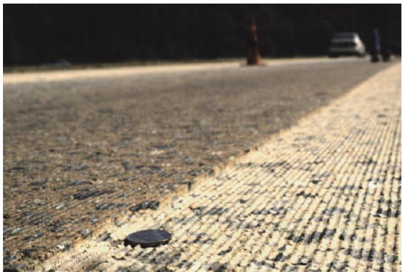
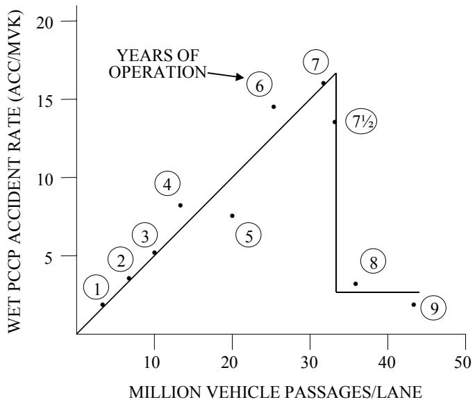
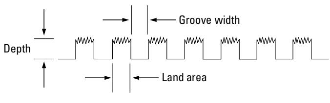
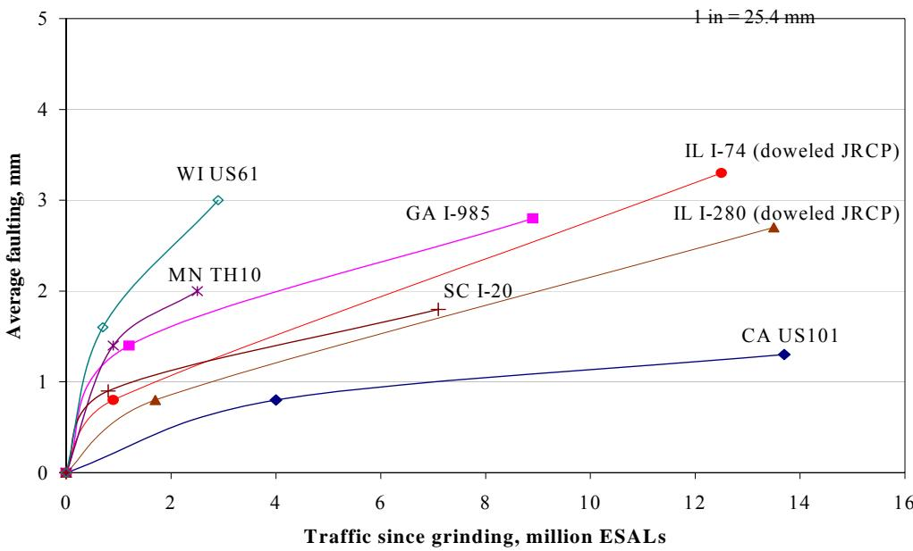

Diamond Grinding for Surface Restoration
Diamond grinding is a surface‑restoration treatment applied to structurally sound concrete pavements that have become rough or uneven because of faulting, slab warping, wheel‑path wear, joint or crack faulting, or loss of macro‑texture [1][2][4]. The method removes a thin (typically 0.12–0.25 in., up to about ½ in.) hardened concrete layer with a gang‑mounted machine equipped with closely spaced diamond saw blades, creating a “corduroy” texture dominated by the original coarse aggregate and thereby restoring smoothness, ride quality, friction, drainage and reducing noise and hydroplaning risk [3][5][6]. It does not repair underlying structural defects; its purpose is to return the pavement to its original functional condition—smoothness within specification tolerances, adequate skid resistance, and ≥95 % texture coverage in a 3 × 100 ft test area [2][7][8].
Sources (11)
Purpose and treatment objectives
Diamond grinding is employed when a concrete pavement shows excessive roughness or unevenness—such as bumps, faulting, slab warping, elevation differences after repairs, wheel‑path wear, polished texture, or transverse joint and crack faulting—that degrades ride quality. The process “removes a thin layer of hardened concrete from the pavement surface” and “restore smoothness to an existing pavement that has become rough due to faulting and/or slab warping,” effectively “The process used to remove the upper surface of a concrete pavement in order to remove bumps and restore pavement rideability.” It also addresses functional deficiencies that lower friction or macro‑texture, including low skid resistance, insufficient surface friction, and poor drainage; the guides note that it provides “improvements to smoothness, friction, and noise” and that “Diamond grooving is usually done to minimize the hydroplaning effect in a pavement.” Surface irregularities after partial‑or full‑depth repairs are corrected, as “excessive roughness caused by elevation differences after partial‑or full‑depth repairs, faulted transverse joints or cracks, wheel‑path wear, permanent warping, insufficient macrotexture, poor transverse slope, and excess noise” are targeted. Minor rain‑induced damage is also remedied, since “Rain can wash away paste from the surface finish, and, in extreme conditions, weaken the integrity of the concrete,” and any corrected area must still meet “Surface texture and friction requirements must still be met in areas corrected by diamond grinding.” When smoothness falls outside tolerance, “Areas found to be out of specification tolerance for smoothness will be diamond ground and retextured according to specifications,” and low surface resistivity triggers grinding up to 1/8 in. to restore performance: “If the surface resistivity in kohm•cm of the tested slab area is less than 80% of the average surface resistivity of cylinders from the same day’s production, the affected area will be diamond ground to remove the affected surface up to 1/8 in., retextured per the applicable specification.” The treatment removes specific distresses—“faulting, wheel path wear, surface irregularities, and polished surface texture”—and is recommended for pavements with faulting >0.125 in., IRI 63‑90 in./mi, or wheel‑path wear up to ~0.375 in.: “In general, pavements with faulting in excess of 0.125 in., IRI roughness of 63 to 90 in./mi, or wheel path wear up to roughly 0.375 in. are good candidates for diamond grinding.” It is also used on concrete overlays to “restore functional capacity to the pavement” by eliminating “surface irregularities created from the repeated action of traffic loading over time.” The resulting surface often becomes a “corduroy” texture that is among the quietest pavements, with “diamond grinding will result in a surface that largely consists of the coarse aggregates in the concrete mixture,” thereby reducing tire‑pavement noise. Additionally, diamond grinding can be applied to shallow delamination (“If the delamination is relatively widespread but shallow, diamond grinding (DG) may be an option”) and to remove “Removal of transverse joint and crack faulting,” “Removal of wheel path “rutting” caused by studded tire wear,” while providing “Texturing of a polished pavement surface to improve surface friction” and “Improvement of transverse slope to improve surface drainage.” [1][2][3][4][6][7][8][9][10][11]
The figure below illustrates this process in action on a concrete pavement.

Close-up view of a concrete pavement surface showing the transition between unground and diamond-ground sections. [4]The image displays a close-up perspective of a concrete pavement where a distinct texture change is visible across the surface.
[1] — Ch. 3 (p. 58), Ch. 6 (p. 180), Ch. 10 (pp. 319–321); [2] — Ch. 5 (pp. 276–289); [3] — 2 Overview of Concrete Pavemen… (p. 23); [4] — Diamond Grooving and Grinding (pp. 77–78); [6] — App. C (p. 124); [7] — Ch. 6 (p. 71); [8] — Diamond Grinding (pp. 34–36); [9] — Ch. 3 (p. 75), Ch. 4 (pp. 128–318), Ch. 13 (p. 58), Ch. 18 (p. 374); [10] — Ch. 5 (p. 117), Ch. 6 (p. 149), Ch. 8 (p. 198), Ch. 9 (pp. 213–233); [11] — Ch. 5 (p. 103), Ch. 6 (p. 130), Ch. 8 (p. 168), Ch. 9 (pp. 180–191), Ch. 11 (pp. 216–218)
The guides concur that diamond grinding is a surface‑restoration treatment whose chief aim is to bring an already sound concrete slab back to its original functional condition—smoothness, ride quality, friction and drainage. The process removes a thin, hardened layer and creates closely spaced grooves, thereby eliminating faulting, joint or slab irregularities and restoring tire‑road interaction. Its purpose is not to halt structural decay or repair underlying damage; rather it restores functionality. Because the exposed coarse, wear‑resistant aggregate endures traffic loading, the treatment also helps maintain that performance for many years, providing a modest extension of service life, though this benefit is secondary to functional restoration. [1][2][3][4][5][6][7][8][9][10][11]
[1] — Ch. 3 (p. 58), Ch. 10 (p. 319); [2] — Ch. 5 (pp. 276–289); [3] — 2 Overview of Concrete Pavemen… (p. 23); [4] — Diamond Grooving and Grinding (pp. 77–78); [5] — Step 8. Optional Diamond Grind… (p. 29); [6] — App. C (p. 124); [7] — Ch. 6 (p. 71); [8] — Diamond Grinding (pp. 34–36); [9] — Ch. 3 (p. 75), Ch. 4 (pp. 128–318), Ch. 13 (p. 58), Ch. 18 (p. 374); [10] — Ch. 6 (p. 149), Ch. 8 (p. 198), Ch. 9 (pp. 213–233); [11] — Ch. 5 (p. 103), Ch. 6 (p. 130), Ch. 8 (p. 168), Ch. 9 (pp. 180–191), Ch. 11 (pp. 216–218)
Distress characterization and causes
The distress that diamond grinding targets is found on the riding surface of concrete pavements—particularly at transverse joints, cracks, wheel‑path wear zones, and at the interfaces of repair patches. It appears as faulted joints or slabs with measurements such as “Average transverse joint faulting in excess of 0.10 in.” and “Wheel path wear from studded tires greater than 0.25 to 0.50 in.” The extent can be widespread, ranging from shallow delamination across a lane to extensive joint faulting that raises the International Roughness Index to values above typical thresholds (e.g., IRI values in excess of 80 to 170 in./mi). Severity is evident when the surface texture becomes unacceptable, producing “thumping or slapping created by tires as they pass over the joints or cracks,” and when friction falls below agency standards. If left untreated, the faulting “redevelops at a fast rate initially but then stabilizes to a faulting rate comparable to that just prior to the diamond grinding,” and faulting will return if underlying causes are not corrected. The operational consequences include reduced skid resistance, increased hydroplaning risk, higher vehicle noise (“reduce exterior noise levels by 2 to 6 dBA”), and degraded ride quality, all of which compromise driver safety and comfort. [7][8][9][10][11]
The following figure illustrates concrete pavement joint faulting.
 Concrete pavement joint faulting measurement [9]
Concrete pavement joint faulting measurement [9]
The image displays a close-up view of a concrete pavement surface where two slabs meet at a transverse joint. A wooden ruler is held horizontally across the joint to measure the vertical displacement, or faulting, between the adjacent slabs. The caption identifies this condition as concrete pavement joint faulting, which is defined in the source context as a difference in elevation across a joint due to loss of load transfer.
[7] — Ch. 6 (p. 71); [8] — Diamond Grinding (pp. 34–36); [9] — Ch. 3 (p. 75), Ch. 4 (p. 275), Ch. 18 (p. 374); [10] — Ch. 9 (pp. 214–224); [11] — Ch. 5 (p. 103), Ch. 6 (p. 130), Ch. 9 (pp. 180–188)
The guides point to several interrelated mechanisms that generate the surface roughness and faulting that diamond grinding is intended to correct. Water infiltration and inadequate drainage are repeatedly cited: ‘Severe drainage problems must be addressed prior to diamond grinding.’; ‘If there is evidence that a severe drainage or erosion problem exists, as indicated by significant faulting (greater than 6 mm [0.25 in]) or pumping, actions should be taken to alleviate the problem prior to grinding’; and ‘In addition to the use of diamond grinding to restore ride quality, it may be beneficial to reduce the level of moisture that exists beneath the slab.’ Sub‑surface water weakens support and induces slab curvature (‘If little to no distress is observed, it is likely that slab curvature is responsible for the loss in ride quality.’) and joint movement (‘faulting will generally re‑develop if the mechanisms that caused faulting in the first place are not also addressed at the time of grinding.’).
Structural capacity deficiencies—corner breaks, working transverse cracks, shattered slabs, low load‑transfer efficiency, and overall loss of support—are also highlighted: ‘Structural distress must be repaired prior to diamond grinding.’; ‘If load transfer efficiencies are below 60 percent, load transfer restoration must be completed prior to diamond grinding.’; ‘Structural distresses such as pumping, loss of support, corner breaks, working transverse cracks, and shattered slabs will require repairs before grinding’; and ‘Average transverse joint faulting in excess of 0.10 in.’ indicating that weak slab support drives faulting.
Material aging and durability problems accelerate texture loss: ‘Diamond grinding is generally not suitable as a long‑term preservation treatment for concrete pavements suffering from durability problems (such as D‑cracking or ASR)’; ‘Concrete pavements suffering … durability problems, such as D‑cracking, reactive‑aggregate, or freeze‑thaw damage indicate that diamond grinding is not a suitable preservation technique.’ Softer aggregates also polish quickly (‘softer aggregates will tend to polish, losing their surface texture more quickly’).
Environmental exposure during construction and early service creates additional distress. Rain can remove cement paste and induce thermal stresses: ‘Rain can wash away paste from the surface finish, and, in extreme conditions, weaken the integrity of the concrete’; ‘Rain can also cause rapid cooling of the slab surfaces inducing differential thermal stresses and an increased risk potential for cracking.’ Rapid surface drying leads to plastic shrinkage and thermal cracking (‘Plastic shrinkage cracking (due to accelerated surface drying), and • Thermal cracking’).
Heavy traffic loads and wheel‑path wear generate faulting, excessive roughness, and aggregate degradation: ‘Since the durability of the coarse aggregate is an important factor in determining the longevity of a diamond ground surface’; ‘In addition to traffic wear, additional consideration should be given to the effect of winter maintenance activities on the durability of ground surfaces.’ Repeated loading also amplifies faulting when support is weak (‘The effectiveness of diamond grinding depends to a large degree on the stability of the pavement being addressed;’) and can cause thickness loss that reduces structural capacity in thin overlays (‘relatively small thickness reduction … has a greater impact on structural capacity for relatively thin BCOA than for thicker conventional pavements, especially when grinding is performed more than once over the pavement service life.’).
Poor construction or repair practices introduce elevation differences, shrinkage, and excess water that manifest as surface unevenness: ‘This is typically due to diff erences in elevation between the repair areas and the existing pavement.’; ‘differences in elevation between the finished dowel bar slots and the existing pavement’; ‘differences in elevation between the finished repair area and the existing pavement’; ‘shrinkage or settlement of the patching material’; ‘shrinkage or settlement of the repair material’; ‘additional water added to the surface during the finishing process’ leading to ‘drying shrinkage cracking’ and lowered surface resistivity (‘surface resistivity in kohm•cm of the tested slab area is less than 80% of the average surface resistivity of cylinders’).
Collectively, these mechanisms—water infiltration/drainage failure, inadequate structural capacity or weak support, material aging/durability loss, environmental exposure (rain, thermal stresses), heavy traffic loading, and construction imperfections—accelerate the distress that diamond grinding seeks to remediate. [2][3][5][6][7][8][9][10][11]
[2] — Ch. 5 (pp. 276–279); [3] — 2 Overview of Concrete Pavemen… (p. 24); [5] — Step 8. Optional Diamond Grind… (p. 29); [6] — App. C (p. 124); [7] — Ch. 6 (p. 71); [8] — Diamond Grinding (pp. 34–36); [9] — Ch. 4 (p. 275), Ch. 18 (p. 374); [10] — Ch. 8 (p. 198), Ch. 9 (pp. 214–224); [11] — Ch. 8 (p. 168), Ch. 9 (pp. 180–191)
Applicability and treatment selection
The guides concur that diamond grinding is appropriate only on concrete pavements that are structurally sound and functionally adequate. “Grinding is recommended when the pavement is structurally sound” and “the hardness of the concrete aggregate should be determined so that the diamond blades are selected, sized, and spaced accordingly.” The treatment targets surfaces with moderate distress: faulting greater than about 0.10 in. to 0.125 in., IRI values ranging from roughly 63‑90 in/mi up through 80‑170 in/mi, but not exceeding the cost‑effective limit of an IRI over 190 in/mi, and wheel‑path wear up to about 0.375 in. (or 0.25‑0.50 in. where studded‑tire wear is a factor). “In general, pavements with faulting in excess of 0.125 in., IRI roughness of 63 to 90 in./mi, or wheel path wear up to 0.375 in. are good candidates for diamond grinding.” “Average transverse joint faulting in excess of 0.10 in.” “IRI values in excess of 80 to 170 in./mi” and “Wheel path wear from studded tires greater than 0.25 to 0.50 in.” Surface friction below agency standards also justifies the treatment: “Surface friction values below agency standards for the roadway facility and location.”
Prior to grinding, any severe drainage problems, low load‑transfer efficiency (below 60 %), or other structural defects must be repaired: “Severe drainage problems must be addressed prior to diamond grinding.” “If load transfer efficiencies are below 60 percent, load transfer restoration must be completed prior to diamond grinding.” The method is suitable for both new concrete overlays and existing slabs, provided the overlay has sufficient sacrificial thickness (typically 0.1‑0.25 in.) and structural integrity: “Diamond grinding is useful for all concrete overlay types to restore functional capacity to the pavement.” There is no limitation on using larger machines on thinner overlays down to ≤6 in.: “There is no limitation on using larger diamond grinding machines on thinner (≤6 in.) concrete overlays from a structural standpoint.”
Traffic considerations include high‑volume facilities such as Interstates and state highways where large profile grinders are effective: “Large profile grinders … are well suited for full surface grinding of overlays on Interstates, state roads, and other major arteries.” The technique is also applicable to urban streets where maneuverability constraints require intermediate‑size equipment: “Intermediate-size profile grinders are well suited for urban overlay projects where larger grinding machines may present maneuverability challenges.” Exposure to studded tires should be limited, and lane closures with an approved traffic control plan must be feasible.
Environmental constraints call for ambient temperatures below about 90 °F and adequate cooling of the grinding head: “Avoid grinding operations at higher ambient temperatures (say, above 90°F) and work to keep the grinding head as cool as possible.” Moisture beneath the slab should be managed when it contributes to curvature‑related ride loss: “In addition to the use of diamond grinding to restore ride quality, it may be beneficial to reduce the level of moisture that exists beneath the slab.” The treatment is most effective before IRI deterioration becomes severe: “it is recommended that diamond grinding be conducted before the loss in IRI becomes too severe.” Texture coverage requirements are strict: “Generally, it is required that a minimum of 95% of the area within any 3 by 100 ft test area be textured by the grinding operation.”
Site selection often focuses on localized wet‑weather safety concerns—curves, exit ramps, bridge decks, and intersection approaches—where grooving creates water‑escape channels: “Longitudinal grooving is more commonly used on highways, and is often done in localized areas where wet weather crashes have been a problem, such as curves, exit ramps, and intersection approaches.” The principal objective of grooving is hydroplaning reduction: “The principal objective of grooving is to provide escape channels for surface water, thereby reducing the incidence of hydroplaning that can cause wet weather crashes.” Overall, when these pavement, traffic, environmental, and site conditions are satisfied and economics are favorable, diamond grinding restores smoothness, improves friction, and reduces noise for a limited service life. [4][7][8][9][10][11]
The effectiveness of this approach in reducing wet-weather incidents is illustrated in the following figure.

Wet weather crash rates for a California pavement before and after longitudinal grooving. [11]The figure plots the wet PCCP accident rate against million vehicle passages per lane, showing data points labeled by years of operation that follow an upward trend line prior to treatment. Diamond grooving increases the macrotexture of the pavement and provides channels for the water to escape, thereby decreasing the potential of hydroplaning.
[4] — Diamond Grooving and Grinding (pp. 77–78); [7] — Ch. 6 (p. 71); [8] — Diamond Grinding (pp. 34–36); [9] — Ch. 4 (p. 275); [10] — Ch. 9 (pp. 214–224); [11] — Ch. 9 (pp. 182–191), Ch. 11 (pp. 216–218)
Diamond grinding is unsuitable when any of the following conditions exist: the required correction exceeds the prescribed depth limit (“limits the depth of grinding to ½ in.”) or would reduce pavement thickness below acceptable levels; the concrete has not attained the minimum age for grinding (“prohibits grinding until the concrete is 14 days old”); the area to be ground surpasses the allowable portion of a sublot (“restricts grinding to a maximum of 10 percent of the total area of any sublot”). It also should not be used on pavements that are structurally unsound—significant cracking, loss of load‑transfer capacity, or other distress—because “Grinding is recommended when the pavement is structurally sound” and “Diamond grinding does not directly address slab cracking.” When load‑transfer efficiency falls below about 60 percent (“If load transfer efficiencies are below 60 percent, load transfer restoration must be completed prior to diamond grinding”) or joint faulting exceeds typical limits (“Average transverse joint faulting in excess of 0.10 in.”), associated treatments such as dowel‑bar retrofit or slab stabilization must precede grinding.
Excessive surface roughness makes grinding uneconomical; pavements with an IRI greater than 190 in/mi (“Exceedingly rough pavements having an IRI in excess of 190 in./mi may be too rough to be successfully ground in a cost‑effective manner”) or roughness values above 3 m/km are also unsuitable. Severe drainage or erosion problems must be corrected first (“Severe drainage problems must be addressed prior to diamond grinding.”; “If there is evidence that a severe drainage or erosion problem exists, as indicated by significant faulting (greater than 6 mm [0.25 in]) or pumping, actions should be taken to alleviate the problem prior to grinding”).
Durability issues such as D‑cracking, alkali–silica reaction, reactive aggregate, freeze‑thaw damage, or other material‑related distress render grinding ineffective (“Diamond grinding is generally not suitable as a long‑term preservation treatment for concrete pavements suffering from durability problems (such as D‑cracking or ASR)”; “Concrete pavements suffering from durability problems, such as D‑cracking, reactive aggregate, or freeze‑thaw damage indicate that diamond grinding is not a suitable preservation technique”).
The aggregate composition must be appropriate; when the concrete lacks durable, wear‑resistant coarse aggregate or contains heterogeneous blends (“diamond grinding will result in a surface that largely consists of the coarse aggregates in the concrete mixture”; “aggregates that are blends of numerous types (e.g., “river rock”) can result in uneven wear”), grinding may lead to rapid surface degradation. If the hardness of the aggregate is unknown, appropriate diamond blades cannot be selected (“before conducting this repair the hardness of the concrete aggregate should be determined so that the diamond blades are selected, sized, and spaced accordingly.”).
Thin bonded‑concrete overlays or sections with limited sacrificial thickness are vulnerable because “relatively small thickness reduction … has a greater impact on structural capacity for relatively thin BCOA than for thicker conventional pavements,” and grinding may compromise fatigue life. When overlay panels are rocking, faulting, or otherwise moving (“Diamond grinding should follow all repairs aimed at addressing an overlay’s stability and structural integrity”; “If the field performance review indicates that overlay panels are rocking (deflecting excessively) or otherwise exhibiting movement, the net improvement may not be significant after the grinding operation.”), grinding alone will not provide lasting benefit.
Large polymer‑based repair areas can gum up the blades (“Repair areas need to be relatively small, as large repairs with these materials will gum up diamond‑bladed grinding heads”) and high ambient temperatures that soften such repairs should also be avoided (“Grinding operations should be avoided when the ambient temperatures are high (temperatures when the flexible polymer-based repair material can become excessively soft)”).
Finally, any underlying mechanism causing faulting must be treated before or in conjunction with grinding; otherwise “faulting will generally re‑develop if the mechanisms that caused faulting in the first place are not also addressed at the time of grinding” and additional CPR work such as dowel‑bar retrofit or slab stabilization is required. [2][3][4][7][8][9][10][11]
The figure below illustrates a common faulting mechanism that must be identified and addressed during surface restoration.
 Schematic of the faulting mechanism involving pumping and void formation beneath a concrete slab. [9]
Schematic of the faulting mechanism involving pumping and void formation beneath a concrete slab. [9]
The figure illustrates the mechanical process where traffic loads cause fines to migrate from a saturated support layer, creating a wedge that lifts one side of the pavement relative to the other.
[2] — Ch. 5 (pp. 287–289); [3] — 2 Overview of Concrete Pavemen… (p. 23); [4] — Diamond Grooving and Grinding (pp. 77–78); [7] — Ch. 6 (p. 71); [8] — Diamond Grinding (pp. 34–36); [9] — Ch. 4 (pp. 128–167), Ch. 18 (p. 374); [10] — Ch. 5 (p. 117), Ch. 9 (pp. 214–224); [11] — Ch. 9 (pp. 180–191), Ch. 11 (pp. 216–218)
Condition assessment and timing
Determining the need for diamond grinding begins with a comprehensive visual inspection of the pavement surface and structure. Inspectors look for rain‑induced damage after curing, inadequate texture or friction, excessive smoothness, delamination, cracking, pumping, loss of support, corner breaks, shattered slabs, joint condition, transverse cracks, and any drainage problems that could cause faulting. “Grinding is recommended when the pavement is structurally sound” and the inspection also confirms that the pavement does not exhibit movement such as rocking: “If the field performance review indicates that overlay panels are rocking (deflecting excessively) or otherwise exhibiting movement”.
The visual assessment is followed by quantitative measurements: - Extent and depth of rain damage are recorded; when present, cores are taken for petrographic analysis: “If rain damage is evident after the curing period, cores may be removed for petrographic analysis of the concrete’s w/cm ratio, air content, air‑void spacing factor, and general appearance using ASTM C 856.”. - Transverse‑joint faulting is measured; thresholds cited include “Average transverse joint faulting in excess of 0.10 in.” and “Faulted joints in excess of 3 mm (0.125 in).”. - Wheel‑path wear depth is quantified: “Wheel path wear from studded tires greater than 0.25 to 0.50 in.” and “Wheelpath wear up to 10 mm (0.375 in).” - Roughness/ride quality is evaluated with the International Roughness Index. Acceptable ranges are described as “In general, pavements with faulting in excess of 0.125 in., IRI roughness of 63 to 90 in./mi, or wheel path wear up to 0.375 in. are good candidates for diamond grinding” and “Roughness in excess of 1.0 to 1.4 m/km (63 to 90 in/mi).” Values above “Exceedingly rough pavements having an IRI in excess of 190 in./mi may be too rough to be successfully ground in a cost‑effective manner.” are considered uneconomical. - Surface smoothness is checked against specification tolerance: “Areas found to be out of specification tolerance for smoothness will be diamond ground and retextured according to specifications.” - Drying‑shrinkage cracking is inspected where excess water was used: “The areas will be closely inspected for drying shrinkage cracking.” - Surface resistivity is measured in situ and compared with cylinder samples; grinding is required when the slab’s resistivity falls below 80 % of the average: “In situ surface resistivity will be compared to the surface resistivity of cylinder samples. If the surface resistivity in kohm•cm of the tested slab area is less than 80% of the average surface resistivity of cylinders from the same day’s production, the affected area will be diamond ground…” - Aggregate hardness is determined before blade selection: “before conducting this repair the hardness of the concrete aggregate should be determined” and an inexpensive field test is available: “A Mohs hardness kit is an inexpensive way to characterize aggregate hardness.” - Load‑transfer efficiency is tested; if below 60 % restoration must precede grinding: “If load transfer efficiencies are below 60 percent, load transfer restoration must be completed prior to diamond grinding.” - Material checks for extremely hard aggregate or active distress (ASR, freeze‑thaw) are performed because such conditions make grinding impractical: “material checks for extremely hard aggregate or active materials‑related distress (e.g., alkali‑silica reaction or freeze‑thaw damage) are needed because such conditions make grinding impractical.” - Drainage functionality is verified; severe problems must be corrected first: “Severe drainage problems must be addressed prior to diamond grinding.” and “If there is evidence that a severe drainage or erosion problem exists, as indicated by significant faulting (greater than 6 mm [0.25 in]) or pumping, actions should be taken to alleviate the problem prior to grinding”. - Structural integrity is confirmed through nondestructive testing and coring: “Conduct an engineering analysis of the existing pavement in accordance with the procedures described in Chapter 3 (records review, nondestructive testing using an FWD or GPR device, coring and subsurface boring, etc.) to confirm the structural integrity of the underlying concrete pavement.” - A control surface profile is obtained for comparison: “Prior to performing any grinding work, obtaining a profile of the existing surface as the control profile is recommended.” Profile data may be collected with lightweight or high‑speed profilers equipped with wide‑footprint lasers: “Profile measurements may be obtained by the agency or by the contractor using either lightweight or high‑speed profiler equipment.” and “Because of inaccuracies with the use of single‑point (i.e., spot) lasers on a textured surface, the profiler should be equipped with a widefootprint (i.e., line) laser”. The control profile defines target smoothness: “The control profile can be used to identify the target value for the required project smoothness.”.
Decision criteria also incorporate safety data; historical and wet‑weather crash records guide placement of grooves or grinding zones: “Candidate pavements for diamond grooving are often based on historical crash rates.” and “Wet‑weather crash data can be examined to help identify those specific areas where grooving may be required.”
Finally, limits on the extent and depth of grinding are observed: “UFGS 32 13 14.13 restricts grinding to a maximum of 10 percent of the total area of any sublot.” and “The depth of diamond grinding should not exceed ½ in.” Typical removals range from ¼ in. to 1/8 in. depending on conditions. A test section must be prepared for evaluation: “DOD requires the Contractor to prepare a test section at an approved location, grinding at least two adjacent passes with a minimum length of 40 ft to allow evaluation of the resulting surface, the transition between adjacent passes, and the results of crossing a transverse joint.” [2][4][6][7][8][9][10][11]
The figure below illustrates the surface texture achieved through this process.

Diagram of the surface texture profile produced by diamond grinding. [10]The figure displays a schematic cross-section of a pavement surface characterized by alternating grooves and lands, with annotations indicating their respective widths and depth.
[2] — Ch. 5 (pp. 276–289); [4] — Diamond Grooving and Grinding (pp. 77–78); [6] — App. C (p. 124); [7] — Ch. 6 (p. 71); [8] — Diamond Grinding (pp. 34–36); [9] — Ch. 3 (p. 75), Ch. 4 (p. 275); [10] — Ch. 9 (pp. 214–226); [11] — Ch. 9 (pp. 180–188), Ch. 11 (pp. 216–218)
Diamond grinding is applied when a concrete pavement remains structurally and functionally adequate yet shows only surface‑level deficiencies. The treatment restores smoothness to pavements that have become rough because of faulting or slab warping, and it can be used after any required structural repairs but before surface treatments. It may be performed once the concrete has cured for at least 14 days and reached the required minimum strength, with grinding depth limited to about a half‑inch. The method is appropriate when measurable distress exceeds defined thresholds—faulting greater than roughly 0.125 in., an International Roughness Index between about 63 and 90 in/mi, or wheel‑path wear up to approximately 0.375 in.—and the affected area does not exceed the limits set for localized corrective work. [1][2][4][5][6][7][8][9][10][11]
[1] — Ch. 3 (p. 58), Ch. 6 (p. 180); [2] — Ch. 5 (pp. 276–289); [4] — Diamond Grooving and Grinding (pp. 77–78); [5] — Step 8. Optional Diamond Grind… (p. 29); [6] — App. C (p. 124); [7] — Ch. 6 (p. 71); [8] — Diamond Grinding (pp. 34–36); [9] — Ch. 3 (p. 75), Ch. 4 (pp. 256–318), Ch. 13 (p. 58), Ch. 18 (p. 374); [10] — Ch. 5 (p. 117), Ch. 6 (p. 149), Ch. 8 (p. 198), Ch. 9 (pp. 213–233); [11] — Ch. 5 (p. 103), Ch. 6 (p. 130), Ch. 9 (pp. 180–191), Ch. 11 (pp. 216–218)
Treatment procedures
Preparation begins with a thorough engineering analysis—records review, nondestructive testing, coring or boring—to verify that the underlying concrete slab is structurally sound. “Before diamond grinding can be performed, the concrete slab must be at least fourteen days old and have reached its minimum strength.” Aggregate hardness should be determined so that diamond blades are selected, sized, and spaced accordingly; “A Mohs hardness kit is an inexpensive way to characterize aggregate hardness.” All required prior repairs—partial‑depth or full‑depth patching, slab stabilization, dowel bar retrofit, drainage retrofitting, load transfer restoration, and any overlay removal—must be performed at least 24 hours prior to the diamond grinding operation, and “The top layer of the repair area that is expected to be diamond ground should be fortified with moisture‑free structural surfacing aggregate (per material manufacturer specifications).” A control profile of the existing surface is obtained, and “A test section of at least forty feet with two adjacent passes must be prepared and approved before corrective grinding begins.” The QC manager submits a Diamond Grinding Plan identifying deficient areas, extent, and equipment for approval: “the QC manager must submit a Diamond Grinding Plan that identifies deficient areas, extent, and equipment, and obtain approval from the RPR or contracting officer.”
Removal is carried out with a gang‑mounted (or self‑propelled) machine outfitted with closely spaced diamond saw blades. “The grinding machine must be at least three feet wide using 1/8‑inch sawblades that produce a kerf of roughly 0.090–0.130 inches and ridges about 1/32 in higher.” The cut depth may not exceed the applicable limit (½ in for FAA projects or ¼ in for DOD): “the cut depth may not exceed the applicable limit (½ in for FAA projects or ¼ in for DOD).” Typical removal is a thin layer—“removal of a thin layer of concrete (typically 0.12 to 0.25 inches)” or up to 1/8 in as specified: “If the surface resistivity … the affected area will be diamond ground to remove the affected surface up to 1/8 in., retextured per the applicable specification…” The process typically shaves roughly ¼ in from the pavement surface: “The process typically shaves roughly ¼ in. from the pavement surface to improve smoothness.” Grinding consists of removing a very thin layer of the surface using a set of closely spaced diamond saw blades: “Diamond grinding consists of removing a very thin layer of the surface using a set of closely spaced diamond saw blades” and is performed in two passes—an initial flush grind followed by a separate grooving operation: “It consists of a two‑pass operation in which an initial flush grinding is first performed and then followed by a separate grooving operation.”
Placement steps are not required for the grinding itself; however, any identified partial‑depth cracks are injected with an approved low‑modulus epoxy before grinding: “Partial-depth cracks will be injected with an approved low‑modulus epoxy per the manufacturer’s recommendations.” After grinding, areas out of specification tolerance for smoothness are retextured according to specifications and treated with an approved penetrating silane solution as recommended by the manufacturer: “Areas found to be out of specification tolerance for smoothness will be diamond ground and retextured according to specifications… and treated with an approved penetrating silane solution per the manufacturer’s recommendations.”
Finishing includes tapering all ground zones to blend with surrounding pavement, feather‑feathering near shoulders and ramps, and maintaining overlap between adjacent passes to no more than 1 to 2 in while keeping vertical deviations less than 0.12 in: “It is recommended that the amount of overlap between adjacent passes of the diamond grinding equipment be maintained to no more than 1 to 2 in.” and “Vertical deviations between adjacent passes should be less than 0.12 in.” Grinding is limited to no more than ten percent of any sublot’s area: “Grinding is limited to no more than ten percent of any sublot’s area.” The slurry generated must be vacuumed from the surface: “the slurry generated must be vacuumed from the surface.” Re‑profiling confirms that at least 95 % of any 3 × 100 ft test area has been textured and that target smoothness is achieved: “Generally, it is required that a minimum of 95% of the area within any 3 by 100 ft test area be textured by the grinding operation.” Finally, joints are sealed as specified and the roadway is reopened to traffic: “Seal the joints (as specified) and open the project to traffic.”
Curing: No curing is required for the grinding step itself; epoxy and silane treatments follow manufacturer‑specified cure procedures. [2][3][4][6][7][8][9][10]
[2] — Ch. 5 (pp. 287–289); [3] — 2 Overview of Concrete Pavemen… (p. 23); [4] — Diamond Grooving and Grinding (pp. 77–78); [6] — App. C (p. 124); [7] — Ch. 6 (p. 71); [8] — Diamond Grinding (pp. 34–36); [9] — Ch. 4 (p. 167), Ch. 13 (p. 58); [10] — Ch. 5 (p. 117), Ch. 9 (pp. 215–228)
Equipment: The guides agree that diamond grinding is an equipment‑driven process. “Implementation of diamond grinding relies on a gang‑mounted spindle equipped with saw blades and spacers to remove the concrete surface and create the characteristic corduroy texture.” Operators must also be proficient, as “Implementation of diamond grinding hinges largely on the equipment itself; operators must understand the grinder’s operation and maintenance, and select an appropriate grinding head—including blades and sp acers—tailored to the concrete type, because these choices influence wear rate and resulting texture.” The machines are described as a “selfpropelled machine outfitted with a series of closely spaced diamond saw blades mounted on a rotating shaft” or as “Diamond grinding consists of removing a very thin layer of the surface using a set of closely spaced diamond saw blades.” Widths range from large profile grinders up to four‑foot widths for high‑volume highways to intermediate‑size units for limited maneuverability, with walk‑behind units used near curbs; “There are several sizes of diamond grinding equipment available in the industry, including large profile grinders, intermediate-size profile grinders, and bump cutters.” Minimum width requirements are cited: “FAA requires diamond grinding with a machine that grinds at least 3 ft wide (Figure 5.75).” Blade geometry is specified: “Sawblades should be 1/8 inch wide and leave a kerf between 0.090 and 0.130 inches, with ridges about 1/32 inch higher than the grind cut.” Cutting‑head dimensions are given as “The cutting head typically has a width ranging from 1.22 to 1.27 m (48 to 50 in).” Blade spacing for the corduroy texture is defined as “The desired corduroy texture is produced using a spacing of 164 to 197 blades per meter (50 to 60 blades per ft).” The removal action is described as “Using gang‑mounted, closely‑spaced diamond saw blades, diamond grinding uniformly removes a thin layer of concrete.” Area limits are imposed: “UFGS 32 13 14.13 restricts grinding to a maximum of 10 percent of the total area of any sublot.
Sequencing: All sources concur that grinding follows structural repair and precedes surface treatments. “Structural distresses such as pumping, loss of support, corner breaks, working transverse cracks, and shattered slabs will require repairs before grinding” and “Joints and transverse cracks with a deflection load transfer less than 60 percent should be retrofitted with dowels prior to diamond grinding.” The process must occur after partial‑ and full‑depth repairs, load‑transfer restoration, slab stabilization and drainage retrofitting: “Diamond grinding is applied to a concrete pavement after partial- and full-depth repairs and load transfer restoration, as well as slab stabilization and drainage retrofitting.” Severe drainage issues must be resolved first: “Severe drainage problems must be addressed prior to diamond grinding.” A test section is required for airfield work, but generally the sequence is captured by “Diamond grinding should be performed after any other appropriate rehabilitation activities (e.g., partial-depth or full-depth patching) but before any surface treatment methods” and “The final operation before re-sealing joints is to diamond grind the concrete surface.” When combined with load‑transfer restoration, timing is limited: “If diamond grinding is specified for use in combination with a LTR project, the grinding should be completed within 30 days of the placement of the repair material.” For projects that include carbide milling, the order is “carbide milling followed by diamond grinding” and repairs must precede grinding by at least 24 h: “repairs must be performed at least 24 hours prior to the diamond grinding operation.”
Environmental conditions: The guides note temperature sensitivity and winter effects. High ambient heat should be avoided: “Grinding operations should be avoided when the ambient temperatures are high” and explicitly, “Avoid grinding operations at higher ambient temperatures (say, above 90°F) and work to keep the grinding head as cool as possible.” Seasonal maintenance can influence durability: “In addition to traffic wear, additional consideration should be given to the effect of winter maintenance activities on the durability of ground surfaces.”
Traffic restrictions: Safety is governed by a formal traffic‑control plan. “The traffic control plan must comply with Federal or local agency traffic control standards to ensure the safety of the construction personnel and traveling public.” Urban site constraints may limit grinding locations, as “Water valves, manholes, and drainage inlet castings may be high‑set or low‑set in the overlay, and it could cost a considerable amount to reset them.” After grinding and joint sealing, traffic is restored: “Seal the joints (as specified) and open the project to traffic.” [2][3][4][7][8][9][10][11]
[2] — Ch. 5 (pp. 287–289); [3] — 2 Overview of Concrete Pavemen… (pp. 23–24); [4] — Diamond Grooving and Grinding (pp. 77–78); [7] — Ch. 6 (p. 71); [8] — Diamond Grinding (pp. 34–36); [9] — Ch. 3 (p. 75), Ch. 4 (pp. 128–256), Ch. 13 (p. 58); [10] — Ch. 5 (p. 117), Ch. 8 (p. 201), Ch. 9 (pp. 215–229); [11] — Ch. 8 (p. 173), Ch. 9 (pp. 180–187)
Quality and workmanship
Materials – inspection and testing The inspector must confirm that the concrete’s coarse aggregate “is durable and wear‑resistant” and evaluate its “degree of homogeneity (uniformity in type) of the aggregate.” Aggregate hardness must be measured so that “the hardness of the concrete aggregate should be determined so that the diamond blades are selected, sized, and spaced accordingly,” because “the surface characteristics of the pavement after grinding are highly dependent on the blade spacing, which in turn is selected based upon the hardness of the aggregate.” Active material‑related distresses such as alkali‑silica reactivity or freeze‑thaw damage must be identified, as they would preclude grinding.
Preparation – inspection and testing Before grinding begins the concrete must be at least 14 days old and have reached its minimum specified strength; “concrete being ground is at least 14 days old and has reached its minimum specified strength before any grinding begins.” The pavement must be structurally sound, with faulting no greater than about a tenth of an inch (“faulting greater than about a tenth of an inch” disqualifies) and joint deflection under load‑transfer limits (“Joints and transverse cracks with a deflection load transfer less than 60 percent should be retrofitted with dowels prior to diamond grinding”). Ride quality is evaluated by monitoring IRI trends; “ride quality should be evaluated by monitoring IRI trends” and grinding should occur before IRI exceeds unacceptable levels (e.g., “excessive roughness above roughly 190 in/mi generally disqualifies grinding”). Wheel‑path wear must not exceed the prescribed limits (up to three‑eighths of an inch, or “Wheel path wear from studded tires greater than 0.25 to 0.50 in.”). Severe drainage problems and low load‑transfer efficiency (<60 %) must be repaired (“severe drainage problems must be addressed prior to diamond grinding”; “low load‑transfer efficiency (below about 60 %) have been repaired”). All prior repairs, including overlay stability and correction of faulting or rocking slabs, must be completed (“all prior repairs have been completed and that the overlay is stable—any faulting or rocking slabs must be corrected”). Subdrain systems, when present, are inspected and cleaned. The grinding plan—including equipment, blade dimensions, and a test section of at least two adjacent passes over a minimum 40‑ft length—must be prepared, evaluated, and approved (“test section of at least two adjacent passes over a minimum 40‑ft length must be prepared, evaluated, and approved before full‑scale work proceeds”). Slurry removal and proper tapering to adjoining pavement are required (“all slurry must be removed and transitions tapered to adjacent pavement”).
Installation – inspection and testing During grinding the selected blade configuration, spacing, and depth of cut must match design specifications; “blade spacing and depth of cut against design specifications” and “the selection of blades and spacers is known to affect wear rate.” Overlap between adjacent passes shall not exceed 1–2 in., and vertical deviation between passes must be less than 0.12 in. (“overlap between adjacent passes … no more than 1 to 2 in.; vertical deviations between adjacent passes should be less than 0.12 in.”). At least 95 % of any 3 × 100‑ft test area must be textured (“minimum of 95% of the area within any 3 by 100 ft test area be textured”). Equipment operation and maintenance must follow documented procedures; “better understanding of the operation and maintenance of a diamond grinder is also necessary.” Smoothness tolerances are verified (“finished concrete meets smoothness tolerances”), excess water added during finishing is noted and those spots inspected for drying‑shrinkage cracks, and in‑situ surface resistivity is compared to cylinder sample values, flagging any area below 80 % of the day’s average (“In situ surface resistivity will be compared … If … less than 80% of the average … the affected area will be diamond ground”).
Completed work – inspection and testing After grinding the restored surface is examined for the intended smoothness, texture, friction, and noise reduction. Surface texture and friction must meet required values (“surface texture and friction meet the required values, including any necessary grooving”), and ride quality improvements are confirmed by re‑measuring IRI against the pre‑grind control profile (“control profile of the existing surface … is recommended”). The inspector checks for localized spalling or unground “holidays,” verifies uniform elevation near obstructions for proper drainage, and ensures that frictional resistance meets agency performance criteria. Final acceptance measurements, documentation of the Diamond Grinding Plan, personnel qualifications, and any required post‑treatment (e.g., silane application on low‑resistivity zones) are retained for verification. [2][3][4][6][7][8][9][10][11]
[2] — Ch. 5 (pp. 287–289); [3] — 2 Overview of Concrete Pavemen… (pp. 23–24); [4] — Diamond Grooving and Grinding (pp. 77–78); [6] — App. C (p. 124); [7] — Ch. 6 (p. 71); [8] — Diamond Grinding (pp. 34–36); [9] — Ch. 4 (p. 275); [10] — Ch. 9 (pp. 214–221); [11] — Ch. 9 (pp. 180–187)
Treatment may only begin after the concrete has cured at least fourteen days and reached its minimum strength. The depth of material removal is limited to “up to a half‑inch” for FAA work and “a quarter‑inch” for DOD projects, with individual passes typically removing 0.12–0.25 in (≈13–18 mm) and no more than three grinding cycles permitted. The total ground area must not exceed ten percent of any sublot. Equipment geometry must provide a grinding width of at least three feet, saw‑blade kerf between .090 and .130 in, ridge height about 1/32 in, blade spacing of roughly 164–197 blades per metre (50–60 blades per foot), and cutting head width 1.22–1.27 m.
All ground zones must continue to meet final pavement‑thickness, smoothness, texture and friction limits. Smoothness must fall within the specified tolerance; any portion out of tolerance is required to be re‑ground and re‑textured. Surface resistivity after grinding must be at least eighty percent of the average cylinder sample value; otherwise a corrective grind up to 1/8 in, re‑texturing and silane treatment is mandated. The finished surface must achieve “whisper quiet” corduroy texture with at least 95 % of any 3 × 100 ft test area textured, isolated low spots under 2 ft² permissible, vertical steps between adjacent passes less than 0.12 in, and overlap between passes limited to 1–2 in.
Pre‑treatment condition limits require faulting no greater than about 0.125 in (3 mm), wheel‑path wear ≤0.375 in (10 mm), IRI between roughly 63 and 90 in/mi (1.0–1.4 m/km); pavements with IRI above ~190 in/mi are deemed uneconomical to grind. Load‑transfer efficiency must be at least sixty percent, joint deflection ≤0.4 mm, and any severe drainage or structural problems must be corrected before grinding. When diamond grinding is combined with a load‑transfer restoration, it must be completed within the early window (within 30 days of repair placement).
Performance indicators of acceptance include a reduction in roughness of about forty to sixty percent (or an equivalent post‑grind IRI target), friction increase of fifteen to forty‑one percent (average 27 %), wet‑weather crash rates reduced to roughly sixty percent of unground levels, and tire‑pavement noise below approximately 98 dBA. The treatment must preserve existing clearances at bridges, curbs and gutters. Expected service life ranges from eleven to fourteen years before a repeat grinding is needed, with smoothness retained for sixteen to seventeen years in many cases. [2][6][7][9][10][11]
[2] — Ch. 5 (pp. 287–289); [6] — App. C (p. 124); [7] — Ch. 6 (p. 71); [9] — Ch. 4 (pp. 167–275); [10] — Ch. 9 (pp. 216–221); [11] — Ch. 8 (p. 173), Ch. 9 (pp. 180–187)
Performance and service life
Across the guides, diamond grinding is described as a surface‑restoration method that removes a thin hardened layer and leaves a texture dominated by the original coarse aggregates; “diamond grinding will result in a surface that largely consists of the coarse aggregates in the concrete mixture.” This exposure of durable aggregate helps maintain condition longer when the mineralogy is uniform. Functionally, the treatment eliminates joint faulting and improves macro‑texture, thereby restoring ride quality and increasing load‑carrying capacity; as noted, “Restoring ride quality improves pavement load‑carrying capacity and adds value to an in‑place pavement.” The improvement also raises skid resistance and drainage, contributing to safety and fuel efficiency. However, the guides agree that diamond grinding does not address underlying structural defects; it is “Diamond grinding is generally not suitable as a long‑term preservation treatment for concrete pavements suffering from durability problems (such as D‑cracking or ASR)”. When applied within accepted distress limits, the expected service life is substantial but finite: “average longevity of diamond ground projects (i.e., the time until second grinding or rehabilitation was needed) was 14 years,” with many sections retaining smoothness for 16–17 years before another intervention is required. [3][7][8][9][10][11]
[3] — 2 Overview of Concrete Pavemen… (p. 23); [7] — Ch. 6 (p. 71); [8] — Diamond Grinding (pp. 34–36); [9] — Ch. 4 (pp. 128–318), Ch. 18 (p. 374); [10] — Ch. 9 (pp. 213–233); [11] — Ch. 6 (p. 130), Ch. 9 (pp. 180–191)
The guides identify several recurring distresses that limit the effectiveness of diamond grinding. “Diamond grinding frequently fails by losing its macro‑texture prematurely, which diminishes friction and raises tire‑pavement noise.” This loss is driven primarily by the durability and uniformity of the coarse aggregate exposed at the surface; non‑uniform or soft aggregates erode unevenly under heavy traffic loads and winter maintenance activities. When the existing ride quality is already poor, grinding may be uneconomical: “Exceedingly rough pavements having an IRI in excess of 190 in./mi may be too rough to be successfully ground in a cost‑effective manner.” Even when grinding proceeds, surface smoothness must meet tolerance limits; otherwise corrective action is required: “Areas found to be out of specification tolerance for smoothness will be diamond ground and retextured according to specifications,” and any drying‑shrinkage cracks that develop are typically repaired with low‑modulus epoxy injection. The most persistent failure mode is the return of joint or slab faulting when underlying mechanisms are not treated: “If the cause of faulting is not addressed prior to grinding, many agencies have found that the faulting will shortly reappear.” Additional factors that exacerbate these distresses include inadequate drainage, low load‑transfer efficiency (below about 60 %), hard aggregates that increase blade wear and cost, and pre‑existing structural defects such as corner breaks, active transverse cracks, or spalling. The guides consistently stress that successful diamond grinding requires addressing aggregate durability, surface roughness, smoothness tolerance, and any underlying joint or structural issues before the grind is performed. [3][6][7][8][9][10][11]
The following figure illustrates the long-term performance of these treatments by showing time history faulting data for diamond ground projects.

Time history of faulting development in various concrete pavements following diamond grinding. [11]All plotted curves demonstrate that faulting increases over time as traffic loads accumulate since the grinding treatment was applied.
[3] — 2 Overview of Concrete Pavemen… (pp. 23–24); [6] — App. C (p. 124); [7] — Ch. 6 (p. 71); [8] — Diamond Grinding (pp. 34–36); [9] — Ch. 18 (p. 374); [10] — Ch. 5 (p. 117), Ch. 8 (p. 198), Ch. 9 (pp. 214–221); [11] — Ch. 5 (p. 103), Ch. 6 (p. 130), Ch. 8 (p. 168), Ch. 9 (pp. 180–187)
Monitoring and follow-up
After grinding, inspectors verify that all ground areas should be tapered to provide smooth transitions to surrounding pavement areas, and all slurry must be vacuumed from the finished pavement surface. The areas will be closely inspected for drying shrinkage cracking. Pavement ride quality and distress development should be monitored to determine the rate of IRI gain. Upon completion of the diamond grinding process, the profile should be rerun and evaluated to determine whether or not the diamond‑ground surface now meets the smoothness requirements. [2][6][9][10]
[2] — Ch. 5 (pp. 287–289); [6] — App. C (p. 124); [9] — Ch. 4 (p. 275); [10] — Ch. 9 (pp. 216–221)
The guides agree that additional maintenance, repair, or rehabilitation is required when a diamond‑ground surface no longer meets accepted smoothness, texture, or structural criteria. Indicators include a noticeable increase in ride‑quality roughness—“Roughness in excess of 1.0 to 1.4 m/km (63 to 90 in/mi)”—or IRI values that rise beyond the ranges specified for traffic level (e.g., “IRI values above the 80–170 in/mi range”). Joint faulting beyond limits, such as “joint faulting exceeding 0.10 in.” or “Faulted joints in excess of 3 mm (0.125 in)”, and rapid re‑appearance of faulting also signal unresolved slab instability. Wheel‑path wear approaching the limits noted—“Wheel‑path wear up to 10 mm (0.375 in)” or “wheel‑path wear greater than 0.25–0.50 in.”—indicates loss of thickness and reduced load capacity.
Uneven wear caused by heterogeneous aggregates is highlighted: “When a diamond‑ground surface begins to exhibit uneven wear—particularly when the concrete mix includes heterogeneous coarse aggregates—the resulting rise in tire‑pavement noise indicates that the texture is losing effectiveness and additional maintenance, repair, or rehabilitation may be needed.”
Failure to meet smoothness tolerance, drying shrinkage cracking after excess water, or low surface resistivity also trigger further action: “When a concrete pavement segment fails to meet the specified smoothness tolerance, shows signs of drying shrinkage cracking after excess water was applied during finishing, or registers a surface resistivity that is less than eighty percent of the average resistivity measured on contemporaneous cylinder samples…”
Structural and drainage deficiencies are flagged: “any emerging severe drainage problems, unresolved structural distress, load‑transfer efficiency dropping below sixty percent, or signs of material‑related distress such as alkali‑silica reaction or freeze‑thaw damage…” and post‑grind observations of excessive faulting, slab deflection (rocking) or movement: “When post‑grind inspections show that the overlay continues to exhibit excessive faulting, slab deflection (rocking) or other movement…”.
Ride‑quality decline without visible distress points to slab curvature: “When the pavement’s ride quality begins to decline and the International Roughness Index (IRI) starts to increase…the loss of smoothness is likely due to slab curvature, signalling that another round of diamond grinding is needed before the IRI deterioration becomes severe.” Re‑appearance of previously removed joint faulting likewise requires additional work: “When the joint faulting that was originally removed by diamond grinding begins to reappear, it signals that the underlying causes of the fault have not been corrected and additional maintenance or rehabilitation is required.”
Repeated grinding on thin overlays can compromise capacity: “If grinding has been repeated multiple times on a relatively thin unbonded concrete overlay, the cumulative loss of thickness can compromise structural capacity…”. Excess moisture beneath the slab also calls for drainage improvements: “In addition to the use of diamond grinding to restore ride quality, it may be beneficial to reduce the level of moisture that exists beneath the slab.”
Surface‑texture deficiencies are identified when texture coverage is insufficient or elevation differences exist: “Any post‑grind profile that fails to achieve at least 95 % texture coverage in a 3 × 100 ft strip, exhibits vertical steps between adjacent passes greater than 0.12 in., contains low spots larger than allowed, or leaves unground ‘holidays’…” and “Roughness or uneven elevation relative to adjacent pavement—often the result of an improperly finished repair or grinding of large, soft polymer patches—signals a deficient surface.”
Structural problems such as corner breaks, transverse cracks, shattered slabs, or widespread cracking (>10 % of slabs) also demand rehabilitation: “Persistent structural problems such as corner breaks, transverse cracks, shattered slabs, or widespread slab cracking (generally >10 % of slabs) likewise demand supplemental rehabilitation.”
When the service life approaches 10–15 years or aggressive factors accelerate texture loss, further interventions become necessary: “When the service life of the grind approaches its typical 10–15‑year span—or when aggressive factors like studded‑tire exposure accelerate texture loss…”. Rapid faulting redevelopment due to low load transfer or soft aggregate polish also calls for complementary measures: “Rapid redevelopment of faulting due to uncontrolled load transfer or a soft aggregate polish that erodes texture also calls for complementary CPR measures such as slab stabilization or DBR, because ‘diamond grinding does nothing to add to the structure of a pavement, so alternative structural solutions must be sought if significant structural issues or deficiencies exist.’”
Finally, declines in surface friction or increases in wet‑weather crashes indicate insufficient macro‑texture: “Surface friction and wet weather crash data can be used to determine the extent of the grooving that may be needed”. [3][6][7][8][9][10][11]
The figure below illustrates how friction is measured using the California CT-342 device at various angles relative to the pavement centerline.
 Friction index relative to friction in direction of travel for various concrete pavement surface textures at different deviation angles. [10]
Friction index relative to friction in direction of travel for various concrete pavement surface textures at different deviation angles. [10]
The figure plots the ratio of friction measured at varying angles relative to a standard longitudinal measurement for four distinct concrete pavement surface textures: CDG, Random transverse tined, Astro turf, and Grooved. The data indicates that as the deviation from the direction of travel increases, the friction encountered by tires on grooved surfaces rises significantly compared to other textures. This skewed frictional effect is suggested to aid in vehicle recovery and reduce wet pavement accidents.
[3] — 2 Overview of Concrete Pavemen… (p. 23); [6] — App. C (p. 124); [7] — Ch. 6 (p. 71); [8] — Diamond Grinding (pp. 34–36); [9] — Ch. 4 (p. 275), Ch. 18 (p. 374); [10] — Ch. 5 (p. 117), Ch. 8 (p. 198), Ch. 9 (pp. 214–221); [11] — Ch. 6 (p. 130), Ch. 8 (p. 168), Ch. 9 (pp. 180–188)
References
- Integrated Materials and Construction Practices for Concrete Pavement: A State-of-the-Practice Manual (2nd edition IMCP Manual, 2019) [link]
- Best Practices Manual: Quality Control and Quality Acceptance of Concrete Airport Pavement [link]
- How to Reduce Tire-Pavement Noise: Better Practices for Constructing and Texturing Concrete Pavement Surfaces (2012) [link]
- Guide to Cement-Based Integrated Pavement Solutions (2011) [link]
- Guide for Partial-Depth Repair of Concrete Pavements (2012) [link]
- Quality Control for Concrete Paving: A Tool for Agency and Industry (Optimized for fast web viewing–2021) [link]
- Sustainable Concrete Pavements: A Manual of Practice (2012) [link]
- Concrete Overlay Repair and Replacement Strategies (Guide–Optimized for fast web viewing–2024) [link]
- Guide for Concrete Pavement Distress Assessments and Solutions: Identification, Causes, Prevention, and Repair (Distress Manual–2018) [link]
- Concrete Pavement Preservation Guide (3rd Edition–Optimized for fast web viewing–2022) [link]
- Concrete Pavement Preservation Workshop Reference Manual (2008) [link]